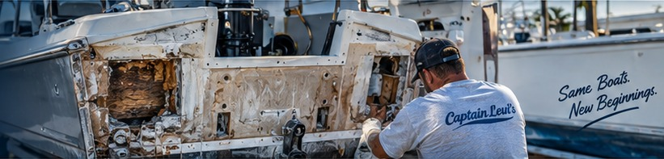
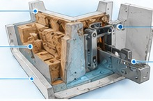
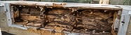
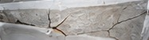
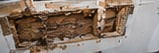

Complete Transom Replacement
Remove and replace the entire transom with marine-grade materials.
Learn More
Restore the structural strength behind your boat. Captain Levi’s repairs rotten, delaminated, cracked, and water-damaged transoms throughout Tampa Bay.
The transom carries the engine’s weight and thrust, and ties into major hull structure. Water intrusion can rot the core, fiberglass can delaminate, and mounting areas can crack — putting your boat’s strength, safety, and performance at risk.

Remove and replace the entire transom with marine-grade materials.
Learn More

Send us photos and we’ll take a look.
Send Us PhotosEvery transom repair is based on the actual condition of your boat — not just covering the visible damage. We use marine-grade fiberglass fabrics and the appropriate resin systems to ensure a strong, long-lasting repair.
We assess the damage, check for moisture, and determine the full extent of the repair.

02All compromised fiberglass and core material are removed down to solid structure.
New core and marine-grade fiberglass fabrics are installed using the proper resin system.
The repair is shaped, finished and matched to your boat for a clean, durable result.
We don’t just cover the damage. We repair the structure behind it.
Common signs include soft spots, cracks, engine mounting movement, water leaks, or visible damage around the engine area.
Yes. Many transoms can be partially repaired if the undamaged structure is solid.
Yes. We remove wet or rotted core material and replace it with new, marine-grade core materials.
Yes. We can rebuild damaged or crushed engine mounting areas and restore proper strength.
Yes. We offer both mobile service throughout Tampa Bay and shop repairs at our Largo location.
Turnaround time depends on the extent of the damage and access to the boat. We’ll provide a timeline after inspection.
We provide fiberglass transom repair and replacement throughout Pinellas County and the greater Tampa Bay area, including Largo, Clearwater, Dunedin, St. Petersburg, Seminole, Pinellas Park, Indian Rocks Beach, Madeira Beach, Treasure Island, Tampa and surrounding communities.
Don’t wait for structural damage to spread. Send Captain Levi’s photos of the transom and we’ll help you determine the next step.
Have a soft or cracked transom, a loose engine mount or a question about a transom rebuild, need a quote, or ready to schedule? Fill out the form or give us a call — we’ll get back to you as soon as possible. Your boat deserves the best, and we’re here to make it happen.
Tell us a little about your project and we’ll get back to you quickly.